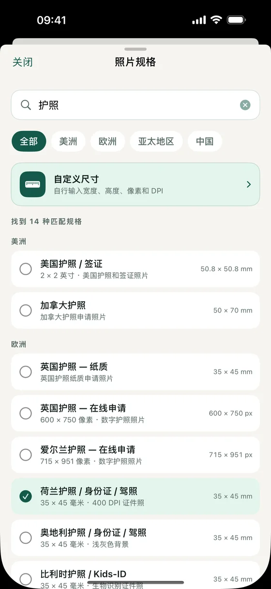

图文教程
美国、英国、加拿大护照照片尺寸怎么选
美国纸质护照照片是正方形，英国纸质照片更窄长，加拿大纸质照片又更大。先对照下表，再在 iPhone 上用 IDMint 找到对应的参考规格。
三国护照照片尺寸对照
| 申请类型 | 宽 × 高 | 官方指引 |
|---|---|---|
| 美国 · 纸质 | 2 × 2 英寸（约 51 × 51 毫米） | 美国国务院 |
| 英国 · 纸质 | 35 × 45 毫米 | 英国政府纸质照片要求 |
| 英国 · 在线 | 至少 600 × 750 像素 | 英国政府电子照片要求 |
| 加拿大 · 纸质 | 50 × 70 毫米 | 加拿大政府 |
1. 先确定国家和申请方式
拍照或编辑之前，先看签发机构的最新指引。纸质照片与网上上传的电子照片，可能有不同尺寸和提交规则。
打开 IDMint 的规格列表，搜索国家。看到纸质和在线两种规格时，按自己的申请方式选择。


2. 允许编辑时，再按正确单位设置
可以选内置规格，也可以自定义宽高。纸质尺寸通常用英寸或毫米，电子上传通常用像素。
规格可用来核对和预览尺寸。只有申请机构允许时，才用应用裁剪或导出用于提交的照片。更换背景、修图或自拍是否允许，需要分别确认。

3. 提交前再核对官方要求
美国护照照片对数字修改有限制。英国在线申请需核对构图、文件大小和是否使用照片码。加拿大通常要求本人到商业摄影师或照相馆拍摄。
应用里的尺寸是参考。提交时以官方的拍摄方式、照片背面标注、照片码或原始文件要求为准。